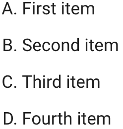

Test of Superfences Custom
Our goal it to use uppercase letters to style the ordered list like this.

Our final result is to a superfence that adds a <div> with a class in markdown.
```markdown {.upper-alpha}
1. Response 1
2. Response 2
3. Response 3
4. Response 4
```
Which renders this:
1. Response 1
2. Response 2
3. Response 3
4. Response 4
The trick is to not force the order list, but to just add a lot of CSS to make the pre/code blocks look like lists.
From this:
<div class="upper-alpha highlight">
<pre>
<span></span>
<code>
<span class="k">1.</span> Response 1
<span class="k">2.</span> Response 2
<span class="k">3.</span> Response 3
<span class="k">4.</span> Response 4
</code>
</pre>
</div>
Using the following CSS:
.upper-alpha {
counter-reset: list-counter; /* Initialize the counter */
font-family: Arial, sans-serif; /* Optional: Set a preferred font */
font-size: 16px; /* Optional: Set font size */
color: black; /* Optional: Set text color */
}
.upper-alpha pre {
margin: 0; /* Remove default margin */
}
.upper-alpha code {
display: block; /* Ensure code block occupies full width */
white-space: pre-wrap; /* Allow line wrapping */
position: relative; /* Establish a positioning context for absolute elements */
}
.upper-alpha .k {
display: inline-block; /* Allow setting width and positioning */
width: 15px; /* Space for the counter */
position: relative; /* Positioning context for ::before */
color: transparent; /* Hide existing numbers */
}
.upper-alpha .k::before {
counter-increment: list-counter; /* Increment the counter */
content: counter(list-counter, upper-alpha) ". "; /* Display A., B., etc. */
position: absolute;
left: 0; /* Align to the left of the .k span */
color: black; /* Color of the new markers */
/* Adjust vertical alignment if necessary */
top: 0;
}
The mkdocs.yml is simple
site_name: Test Superfences
nav:
- Home: index.md
theme:
name: material
markdown_extensions:
- pymdownx.superfences:
extra_css:
- css/extra.css
This allows us to wrap the ordered list in a div that has a class specified in the markdown.
Test #1: Default Numeric Ordered List
- Response 1
- Response 2
- Response 3
- Response 4
This is the default for mkdocs material markdown. It has a green boarder showing the <ol> element is present in the HTML per this CSS rule:
/* for showing that the ol elements are in the HTML */
ol {
border: solid green 3px;
}
Test #2 Using Superfences for Upper Alpha Order
This is the format for superfences. The three colons
::: that bracket the block must match and must
not be indented.
::: {.upper-alpha}
1. Response 1
2. Response 2
3. Response 3
4. Response 4
:::
Here is how it looks:
::: {.upper-alpha} 1. Response 1 2. Response 2 3. Response 3 4. Response 4 :::
The mkdocs.yml is the following:
site_name: Test Superfences
nav:
- Home: index.md
theme:
name: material
markdown_extensions:
- attr_list
- pymdownx.superfences:
custom_fences:
- name: div
class: ''
format: !!python/name:pymdownx.superfences.fence_div_format
extra_css:
- css/extra.css
The superfence should wrap the <ol> in a <div>:
<div class="upper-alpha">
<ol>
<li>First item</li>
<li>Second item</li>
<li>Third item</li>
<li>Fourth item</li>
</ol>
</div>
The CSS for rendering this in upper alpha is the following:
.upper-alpha > ol {
list-style-type: upper-alpha;
}
This fails and the ":::" are showing in the HTML.
::: {.upper-alpha} 1. Response 1 2. Response 2 3. Response 3 4. Response 4 :::
The trick of adding the property after the last element fails since the attributes are not added to the ol
- First item
- Second item
- Third item
- Fourth item
<ol>
<li>First item</li>
<li>Second item</li>
<li>Third item</li>
<li>Fourth item</li>
</ol class="upper-alpha">
Markdown Lists Within Divs Also Fail
<div class="upper-alpha">
1. First item
2. Second item
3. Third item
4. Fourth item
</div>
Pure HTML Works
- First item
- Second item
- Third item
- Fourth item
This Works
<ol class="upper-alpha">
<li>First item</li>
<li>Second item</li>
<li>Third item</li>
<li>Fourth item</li>
</ol>
ol.upper-alpha {
list-style-type: upper-alpha;
}
- First item
- Second item
- Third item
- Fourth item
attr_list vs. markdown.extensions.extra
We have tried both the attr_list as
well as the markdown.extensions.extra
configuration in our mkdocs.yml. Neither
of them seem to work.
Custom Format
I have also tried different formats for the format
Bang bang python/name format:
format: !!python/name:pymdownx.superfences.fence_div_format
format: pymdownx.superfences.fence_div_format
Other Tests
1. Response 1
2. Response 2
3. Response 3
4. Response 4
1. Response 1
2. Response 2
3. Response 3
4. Response 4
1. Response 1
2. Response 2
3. Response 3
4. Response 4
:::markdown {.upper-alpha} 1. Response 1 2. Response 2 3. Response 3 4. Response 4 :::
References
This is suggested here: PyMarkdown Extensions Superfences